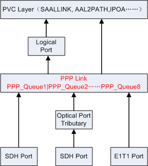

Overview
PPP links are important resources of the Base Station Controller. The transmission quality of PPP links affects the availability of system functions. One PPP message enters one of six services data queues separately by DSCP(Differentiated Service Code Point). That is, the services of different types can be transmitted through different queues according to certain rules, and the PPP link schedules the data in different queues according to priorities. You can run the following commands to query the correspondence between service types and queues:
1. You can run the LST TRMMAP command to query the correspondence between service types and the Per-Hop Behavior (PHB).
2. You can run the LST PHBMAP command to query the correspondence between PHB and DSCP.
3. You can run the LST PHBMAP command to query the correspondence between DSCP and queues.
PPP link queues belong to the data link layer.

The figure 1 shows the position of the data link layer in the TCP/IP protocol suite.

In the configuration structure, PPP links are between physical ports and logical applications, as shown in the figure 2.
Measurement Counters
| ID | Counter | Description | Original Release |
|---|---|---|---|
| 67195192 | VS.PPP.QUEUE.TXPACKETS | T7381:Number of Packets Transmitted in a PPP Link Queue | Earlier than V900R011 |
| 67195193 | VS.PPP.QUEUE.TXBYTES | T7382:Number of Bytes Transmitted in a PPP Link Queue | Earlier than V900R011 |
| 67195194 | VS.PPP.QUEUE.TXDROPPACKETS | T7383:Number of Packets Discarded in Transmission on a PPP Link Queue | Earlier than V900R011 |
| 67195195 | VS.PPP.QUEUE.TXDROPBYTES | T7384:Number of Bytes Discarded in Transmission on a PPP Link Queue | Earlier than V900R011 |
| 67204582 | VS.PPP.QUEUE.PEAK.TXRATE | T7386:Maximum Transmit Rate of a PPP Link Queue | Earlier than V900R011 |
| 67204583 | VS.PPP.QUEUE.MEAN.TX | T7387:Average Transmit Rate of a PPP Link Queue | Earlier than V900R011 |
Counter Relationship
None